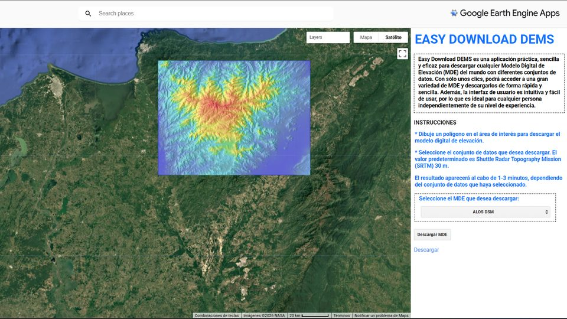

Google Earth Engine básico
Del registro en la plataforma a la teledetección: vectores, DEM, Landsat, Sentinel-2, índices de vegetación, agua e inundaciones.
SIG EDUCA es una iniciativa educativa que busca fortalecer el aprendizaje de los Sistemas de Información Geográfica en español. Queremos que estudiantes, docentes y profesionales de cualquier lugar puedan usar ArcGIS Pro, QGIS y Google Earth Engine para responder preguntas reales sobre su territorio.
Los datos geoespaciales están en todas partes, en el ordenamiento de una ciudad, en el monitoreo de un bosque, en la prevención de un deslizamiento o en la planificación de una cosecha. Saber usarlos abre puertas, pero muchas veces el conocimiento está disperso, en otro idioma o detrás de cursos costosos. SIG EDUCA nace para cerrar esa brecha.
Cada tema parte de un problema concreto y termina con un resultado que de verdad puedes usar, ya sea un mapa, una capa o una imagen lista para analizar.
Contenido en español, con herramientas libres o de acceso académico, pensado para que nadie se quede por fuera.
Aprender Sistemas de Información Geográfica desde la programación nunca fue tan fácil. Con unas pocas líneas en Google Earth Engine analizas imágenes satelitales de cualquier lugar del planeta, y te explicamos cada línea.
Pensado para estudiantes de geología, geografía, ingeniería y ciencias ambientales, y para cualquier persona curiosa por los mapas.
¿Primera vez con Google Earth Engine? Empieza por aquí y en tres pasos tendrás tu cuenta lista, tus propios datos en la plataforma y tu primer análisis en el mapa.
Sigue el tutorial Creación y registro en Earth Engine.
Aprende a subir y ver un shapefile con Importar shapefile en Earth Engine.
Selecciona solo lo que necesitas con Trabajar con shapefiles en Earth Engine.
Cada curso reúne sus lecciones en orden, desde lo esencial hasta la teledetección. Elige uno para empezar o usa el buscador de arriba para encontrar un tema concreto.
Teledetección y análisis geoespacial en la nube, programando en JavaScript.
Del registro en la plataforma a la teledetección: vectores, DEM, Landsat, Sentinel-2, índices de vegetación, agua e inundaciones.
Analiza colecciones completas: series de tiempo de Landsat y Sentinel-2, índices año a año, agua con DSWE y animaciones.
Estamos preparando este curso. Mientras tanto, completa el nivel anterior.
El SIG de escritorio libre para crear, editar y analizar mapas.
Instala el SIG de escritorio libre más usado del mundo. Muy pronto llegan nuevas lecciones.
No encontramos lecciones con ese término. Prueba con “shapefile”, “DEM”, “Landsat” o “QGIS”.
Herramientas interactivas creadas por SIG EDUCA. Se usan desde el navegador, sin escribir código.

Descarga un modelo digital de elevación de cualquier lugar del mundo sin registrarte ni programar.
Funciones públicas de SIG EDUCA que puedes cargar en tus scripts con require(), sin copiar código.
users/sigeduca/routines:Indexes/Jones_2019R
Clasifica el agua superficial con las cinco pruebas de DSWE en imágenes Landsat de Colección 2, nivel 2.
users/sigeduca/routines:Indexes/Zou_2018
Detecta agua abierta comparando el MNDWI con el NDVI y el EVI, con la regla de Zou et al. (2018).
Cada semana más personas aprenden SIG con nosotros. Suscríbete al canal y no te pierdas los próximos tutoriales.
Suscribirme al canal¿Tienes preguntas, sugerencias o quieres proponer un tema para un próximo tutorial? Escríbenos al correo o por cualquiera de nuestras redes.